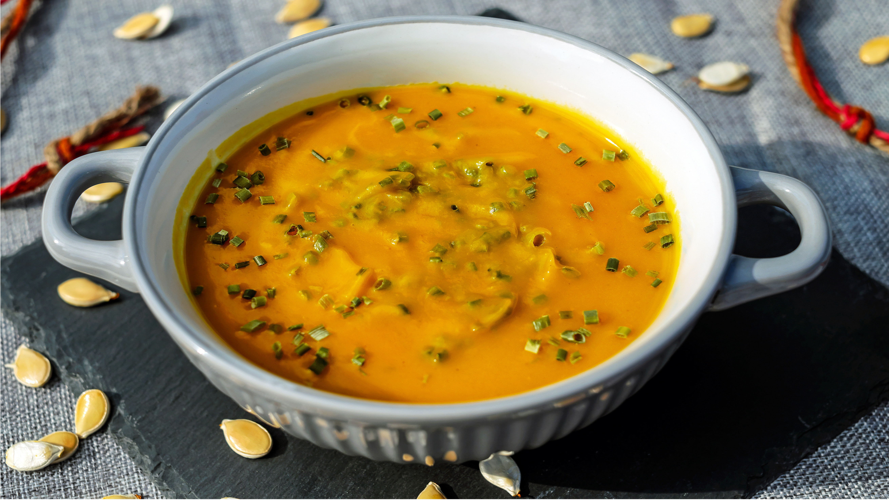
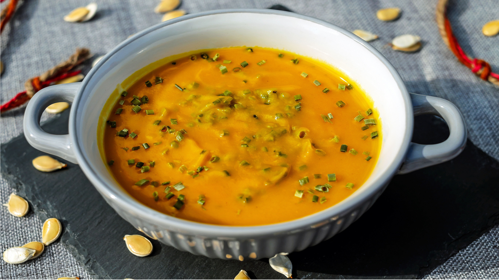

Avhämntning
10% rabatt på angivet pris. Gäller alla rätter.
À la carte
Ris och sallad ingår i alla varmrätter.
- Förrätter -
Papadam
Två krispiga tunna indiska linsmjölsbröd, serveras med mango chutney. Vegansk, gluten- och mjölkfri.
29 :-
Vegetarisk / Vegansk Samosa
Vegetarisk pirog, serveras med mintsås / tamarind chutney
39 :-
Köttfärssamosa
Köttfärspirog, serveras med myntasås / chilisås / vitlökssås
45 :-
Onion Bhaji
Friterade lökringar, serveras med myntasås / chilisås / vitlökssås
39 :-
Vegetarisk Pakora
Friterade blandade grönsaker marinerade med yoghurt och kryddor, serveras med myntasås / chilisås / vitlökssås
49 :-
Breaded Mozzarella Sticks (2 st)
Serveras med myntasås / chilisås / vitlökssås
35 :-
Chili Cheese Nuggets (4 st)
Serveras med myntasås / chilisås / vitlökssås
35 :-
- Tandoorirätter -
(Indiska grillrätter)
Tandoori Kyckling Sizlar
Grillade kycklingklubbor - separat sås
125 :-
Kyckling Tikka Sizlar
Två olika kryddmarinerade stekta kycklingfléer - separat sås
129 :-
Vitlökskyckling Tikka Sizlar
Grillad kycklingfilé marinerad med grön chili och vitlök, serveras med paprika och lök i en varm rykande järnform - separat sås
129 :-
Lamm Tikka Sizlar
Grillad lammfilé, serveras med paprika och lök i en varm rykande järnform - separat sås
169 :-
Kungsräkor Sizlar
Grillade kungsräkor, serveras med paprika och lök i en varm rykande järnform - separat sås
189 :-
Mixed Mughlai Sizlar
Grillad kycklingfilé, lammfilé och kungsräkor, serveras med paprika och lök i en varm rykande järnform - separat sås
199 :-
- Milda rätter -
Korma
Välj mellan kyckling / vitlöksmarinerad kyckling / lamm / kungsräkor i en gryta tillagad med grädde, russin, kokos och cashewnötter (passar för barn)
129 / 139 / 169 / 179 :-
Kyckling Trivandrum
Vitlöksmarinerad grillad kycklingfilé med blomkål tillagad i cashewnötter och kokossås (passar för barn)
139 :-
Tikka Butter Masala
Välj mellan grillad kyckling / vitlökskyckling / lamm / kungsräkor tillagade med nötter, smör och tomatsås (passar för barn)
129 / 139 / 169 / 179 :-
Vitlökskyckling Tikka Masala
Vitlöksmarinerad kycklingfilé, grillad i ugn med smör, grädde och nötter i tomatsås
139 :-
Honung- och mangokyckling
Kycklingfilé och mangobitar i tikkasås och honung (passar för barn)
139 :-
Makhani
Välj mellan kycklingfilé / biff / lamm / räkor i gryta tillagad med vitlök, grädde, jordnötter och cashewnötter i mustig sås
129 / 149 / 159 / 139 :-
- Mellanstarka rätter -
Curry
Välj mellan kyckling / biff / lamm / kungsräkor i traditionell indisk currysås
119 / 139 / 159 / 179 :-
Rogan Josh
Välj mellan kyckling / biff / lamm / räkor. Populär aromatisk nordindisk gryta med vitlök, lök, tomat, indiska örter och färsk koriander
129 / 149 / 159 / 139 :-
Palak Gosht
Välj mellan kyckling / biff / lamm / räkor. Indisk maträtt med stekt spenat i en smakrik sås av ingefära, vitlök och tomat
129 / 149 / 159 / 139 :-
Balti
Välj mellan kyckling / biff / lamm / kungsräkor. Tillagas med jordnötter, cashewnötter, lök, tomat, färska örter, ingefära och grädde. Smakrik och med härliga dofter och färger. En delikatess från norra indien.
139 / 149 / 159 / 179 :-
Badam Jalfrezi
Kyckling / biff / lamm / kungsräkor i en mellanstark gryta med stekt lök och cashewnötter
139 / 149 / 159 / 179 :-
Gosht Gryta
Kyckling / biff / lamm i currygryta med blandade grönsaker
129 / 149 / 159 :-
Dal Gost
Välj mellan kyckling / biff / lamm / räkor. Tillagas med gula linser, limeblad, citronsaft och kockens speciella kryddblandning
139 / 149 / 159 / 139 :-
Shahi Korma
Kycklingfilé marinerad med tikka masala som tillagas i en grytbas av grädde, tomatsås, ingefära och mandlar
129 :-
- Starka rätter -
Karahi
Välj mellan grillad kyckling / friterad biff / lamm / kungsräkor. Tillagad med paprika, lök och kokos i koraisås som serveras i varm järnskål
149 / 159 / 169 / 179 :-
Bhuna
Välj mellan kyckling / biff / lamm / laxfilé tillagad med stekt lök och paprika i bhunasås
129 / 159 / 169 / 179 :-
Madras
Välj mellan sydindisk kyckling / biff / lamm eller räkor i en gryta med kokos och indiska kryddor i madrassås
139 / 149 / 169 / 139 :-
Vindaloo
Välj mellan kyckling / biff / lamm / kungsräkor. Rejält kryddad gryta från södra indien av ingefära, vitlök och tomat
159 / 169 / 179 / 189 :-
- Biriyanirätter -
Biriyani
Välj mellan kycklingfilébitar / lamm / räkor blandade med smörstekt basmatiris, indiska örter, garneras med rostad lök och serveras med vitlökssås och mangosås
129 / 160 / 150 :-
- Vegetariska rätter -
Panir Masala (mellanstark)
Tillagad med egen färskost, kokos, mandel, cashewnötter och jordnötter. Serveras med tandoori-masalasås
139 :-
Panir korai (stark)
Tillagad med hemlagad färskost, färsk vitlök, lök, paprika, tomat, indiska kryddor och färsk koriander
139 :-
Palak panir (mild)
Veganskt smör, fräst spenat med vitlök, kokos, nötter, mandel, grädde och hemgjord ost
139 :-
- Veganska rätter -
Korma vegansk (mild)
Tillagas med indiska kryddor, nötter, kokos, mandel, och kokosgrädde. En delikatess från Punjab.
129 :-
Rogan josh vegansk (mellanstark)
Nordindisk gryta med vitlök, lök, tomat, indiska örter och färsk koriander.
139 :-
Vindaloo vegansk (mycket stark)
Rejält kryddat rätt tillagad med färsk vitlök, lök, paprika, tomat, indiska kryddor och färsk koriander.
139 :-
Korai vegansk (stark)
Tillagad med färsk vitlök, lök, paprika, tomat, indiska kryddor och färsk koriander.
129 :-
Sag dall vegansk (mellanstark)
Traditionell indisk maträtt med hög proteinhalt. Tillagad med linser, stekt spenat, tomat, lök, vitlök och färsk koriander
129 :-
Palak panir vegansk (mild)
Stekt spenat med vitlök, kokos, nötter, mandel, tofu och kokosgrädde
139 :-
Sag Aloo vegansk (mild)
Nordindisk rätt med kokt potatis och spenat
125 :-
Biryani vegansk (mellanstark)
Stekt basmatiris tillagas med olika grönsaker. Serveras med mango och sweet chilisås.
139 :-
Tikka masala vegansk (lite stark)
Grönsaker tillagade med mandel, kokosgrädde och nötter i tomatsås
145 :-
- Barnmeny -
Tandoori kycklingklubbor
Innehåller spår av mandel, nötter och senap
69 :-
Kyckling Nuggets
4 st Kyckling Nuggets med sallad och pommes
69 :-
Kycklingfilé
Serveras med sallad och pommes
69 :-
Kyckling korma (mild)
Grillad kycklingfilé med smörfrästa smakrika kryddor, kokos, mandel, jordnötter, cashewnötter, russin och grädde. En delikatess från Punjab
75 :-
Tikka Masala (mellanstark)
Välj mellan kycklingfilé / grillad vitlöksmarinerad kycklingfilé / grillad lammfile / jätteräkor. Tillagas med kokos, mandel, och kryddor. Serveras med hemgjord smakrik tandoori-masalasås. Kan innehålla spår av nötter och senap
75 / 85 / 90 / 95 :-
Pannkakor
2 st pannkakor med sylt och grädde (socker)
69 :-
- Taste Of India specials -
MIX Tikka Masala (mellanstark)
Välj mellan grillad kycklingfilé / vitlöksmarinerad kycklingfilé / lamm / kungsräkor. Tillagas med kokos, mandel och kryddor. Serveras med hemgjord smakrik tandoori-masalasås. Kan innehålla spår av nötter och senap
179 :-
MIX Balti (mellanstark)
Grillad kycklingfilé, grillad vitlöksmarinerad kyckling, lamm och kungsräkor. Tillagas med jordnötter, cashewnötter, lök, tomat, färska örter, ingefära och grädde. Smakrik och med härliga dofter och färger. En delikatess från norra Indien
179 :-
MIX Korai (stark)
Grillad kycklingfilé, grillad vitlöksmarinerad kyckling, lamm och kungsräkor. Korai tillagas i en speciell järnform under stark värme. Tillagad med färsk vitlök, lök, paprika, tomat och indiska kryddor. Innehåller spår av nötter, mandel
179 :-
Efterätter
Mango Lassi
39 :-
Mango Kulfi
Hemgjord indisk glass tillagad med mango, kokos, mandel och grädde
49 :-
Vaniljglass
Serveras med chokladsås / kolasås
49 :-
- Bröd -
Naan naturell (lerugnsbakat bröd)
25 :-
Vitlöks naan (lerugnsbakat bröd)
30 :-
Ost naan (lerugnsbakat bröd)
35 :-
Peshwari naan
(lerugnsbakat bröd inbakat med kokos, mandel, socker och grädde)
45 :-
- Veganskt bröd -
Veganskt naanbröd naturell
25 :-
Veganskt naanbröd vitlök
30 :-
Veganskt naanbröd Peshwari
(bröd inbakat med kokos, mandel, kokosgrädde. Söt smak)
45 :-
Öppettider
Tis - Tors:
15:30 - 21:00
Fre: 15:30 - 22:00
Lör: 13:00 - 22:00
Sön: 13:00 - 21:00
Mån: Stängt